gridi
운영 화면과 Figma, GitHub를 잇는 AI 워크스페이스
- 문제
- 운영 중인 UI를 Figma에 다시 그리고 디자인 변경 사항을 코드에 반영하는 일을 따로 해야 합니다.
- 역할
- 창업자로 제품을 만들었습니다. Figma 플러그인에서 디자인 변경을 GitHub로 보내는 Design Sync와 Figma 내보내기 기능을 개발했습니다.
- 기술
- Next.js · React · NestJS · Figma Plugin API
- 결과
- 워크스페이스에서 웹 UI를 탐색해 편집 가능한 디자인으로 Figma에 내보냅니다. Design Sync는 디자인 변경을 GitHub 코드 수정안과 PR로 연결합니다.